微電腦 - Canon wordtank Z900 - 如何使用IDA Pro Debug
參考資訊：
https://www.segger.com/downloads/jlink/
https://docs.platformio.org/en/stable/plus/debug-tools/jlink.html
JTAG腳位
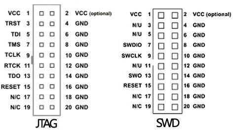
1. 將Z900連接到JTAG
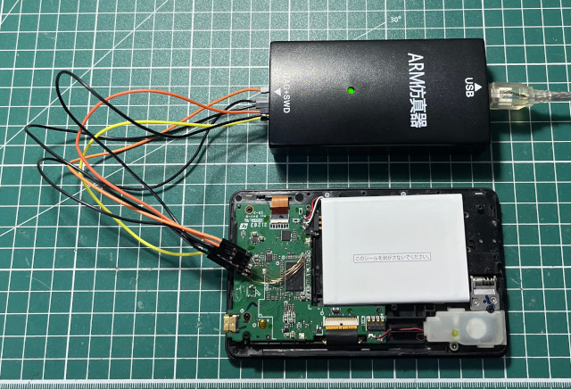
2. 安裝https://www.segger.com/downloads/jlink/JLink_Linux_x86_64.deb
3. Z900上電
4. 開啟J-Mem，這系統似乎是跑WinCE
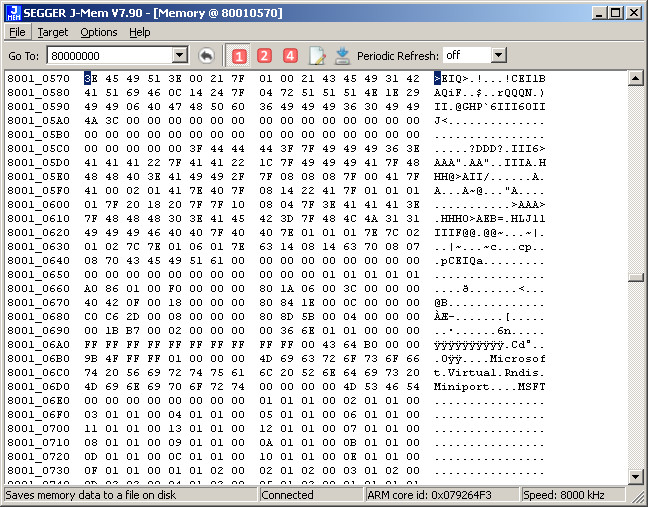
5. 程式應該是從0x80200000開始跑
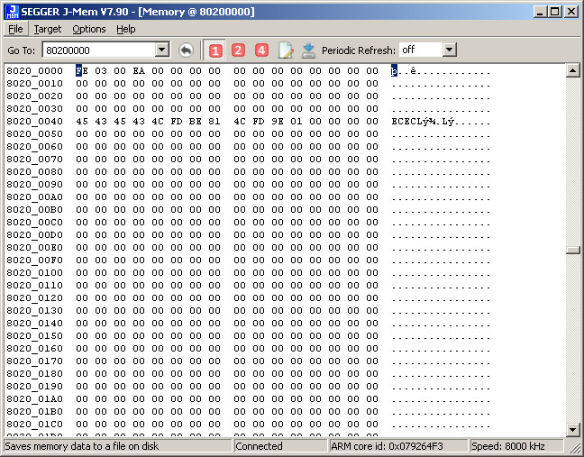
6. 將0x80200000~0x80300000 Dump出來
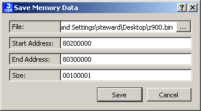
7. 開啟IDA Pro
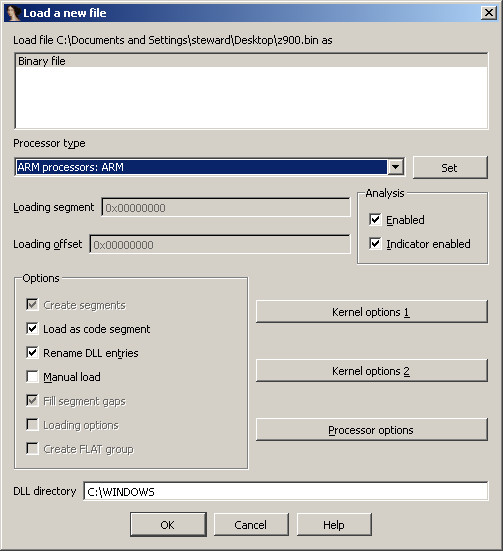
8. 設定載入位址0x80200000
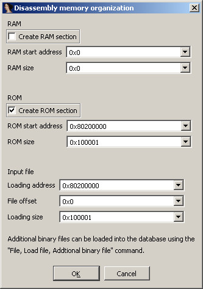
9. 果然是程式開始位址
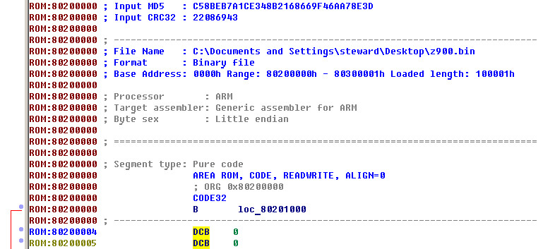
10. 開啟J-Link GDB Server(TCP/IP Port:2331)
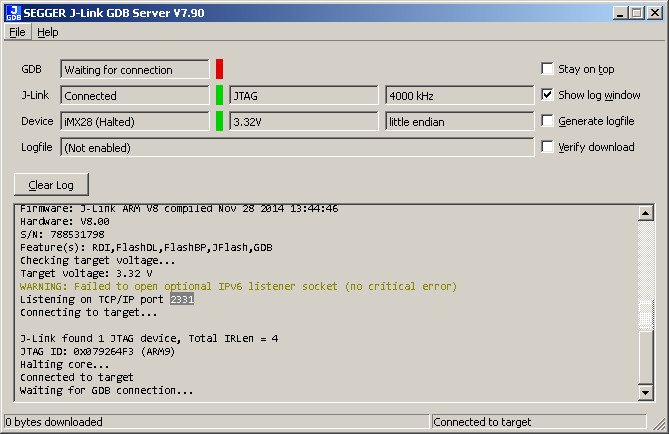
11. Run
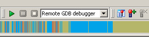
12. localhost 2331
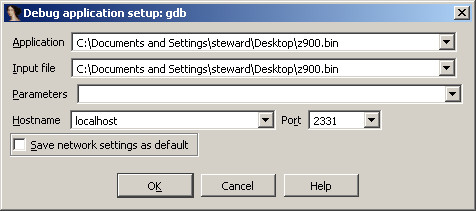
13. 可以開始使用IDA Pro Debug
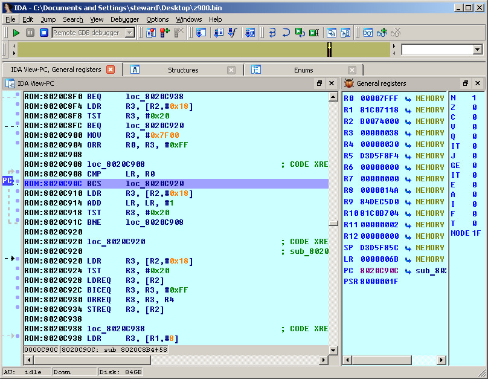